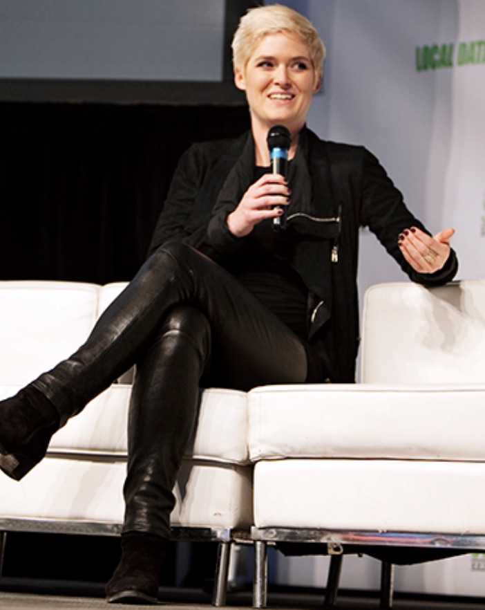
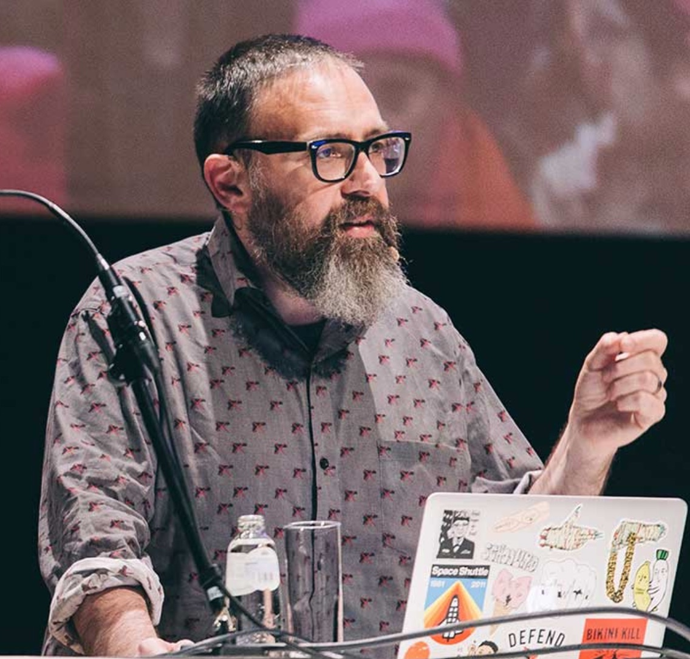
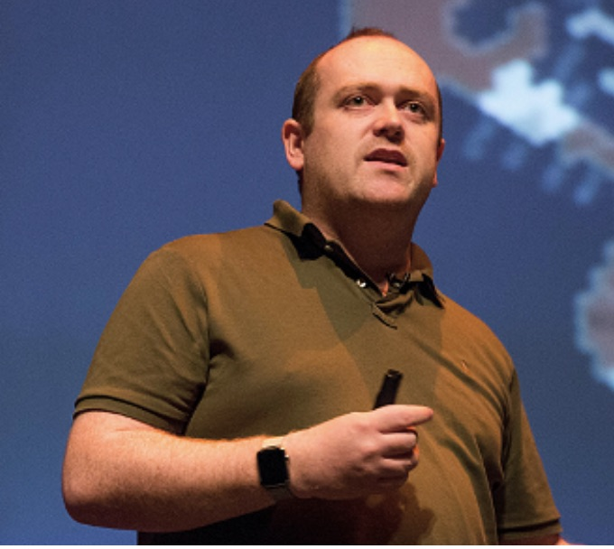

Digital Design Ethics conference
The Digital Design Ethics conference will be held on the 26th of November in the iconic Eye building in Amsterdam. The conference focuses on important ethical aspects of our work as designers of digital products, i.e. designing the good life. As designers, should we adjust? Or are we all witnessing the creation of a new digital 'plastic' soup.
Talks
Digital Design Ethics conference Amsterdam
-

Amber Case
Amber Case believes technology should be designed not to intrude into your life but rather be available only when you need it. This might sound obvious but it is radically different from the way current technology constantly demands your attention.
-

Mike Monteiro
This outspoken author and ambassador of ethics in design will give his unfiltered opinion in a keynote talk.
-

Cennydd Bowles
Drawing on years of research for his new book Future Ethics, designer Cennydd Bowles will illuminate the moral challenges that lie ahead for technologists, and discuss how practitioners and companies can create more thoughtful, ethical products for future generations.
Workshops
Digital Design Ethics conference Amsterdam
-
Calm Technology - Amber Case
-
Dilemma-Driven Design - Deger Ozkaramanli
-
Exclusive Design - Vasilis van Gemert
-
tba - Astrid Poot
-
Privacy by Design - AnneMarleen Olthoff & tba
Programme
Digital Design Ethics conference Amsterdam
The programme runs from 9:00 to 18:00. The schedule includes lunch, 3 keynote talks and workshops.
| Time | Speaker | Talk | Location |
|---|---|---|---|
| 9:00 | Doors open | Coffee & registration | Foyer |
| 10:00 | Organizers | Opening | Cinema 1 |
| 10:15 | Amber Case | Calm Technology | Cinema 1 |
| 11:00 | Break | Foyer | |
| 11:15 | Mike Monteiro | tba | Arena |
| 12:00 | Lunch | Foyer | |
| 13:00 | Workshops | tba | Different locations |
| 15:45 | Break | Foyer | |
| 16:00 | Cennydd Bowles | Future Ethics | Cinema 1 |
| 16:45 | Organizers | Closing | Cinema 1 |
| 17:00 | 🍹Drinks🍹 | Foyer |
Venue
Digital Design Ethics conference Amsterdam
We are hosting the Digital Design Ethics Conferens in the iconic landmark called Eye. This amazing building situated in the harbour district and looking out over the IJ river hosts the national museum for film. Marvel in its unique architectural features while Amsterdam's skyline provides a stunning backdrop.
Next: Contact